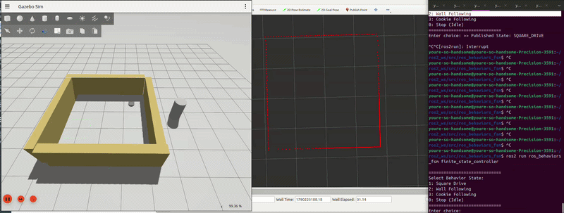

Learning ROS2 fundamentals by programming Neato to drive in a square, follow a wall, and follow a dynamic object
Robo-Behaviors
01 — OVERVIEW
02 — LEARNING GOALS
- How can callbacks be used to subscribe/publish to certain ROS topics?
- How can gazebo simulations, rviz2 visualizations, and terminal commands be useful for debugging?
- How are transformations made between reference frames?
- How are different algorithms (like RANSAC) used for object detection?
- How can wall following and corner evasion be modeled as a second order system?
03 — MEDIA

04 — REFLECTION
Over the course of the project, I've gained familiarity with ROS, Gazebo, rviz, and basic terminal commands. I've improved my coding abilities by understanding how to translate a vision of our system architecture into real code, while ensuring that there is room to scale up its complexity. As I optimized the wall following code, I realized just how important it is to not hard-code any parameters or functions and to leave flexibility to test for various edge cases. I also saw just how useful the simulations were, not only because it had ideal conditions but also because I could build another world to isolate controls and test different behaviors. This was an unexpected but very helpful way for me to debug my work. Additionally, as I focused on more tedious work like creating visualization, I came to appreciate the long tutorials and documentation that was provided. Initially, I used LLMs to translate the tf and Marker guides from C++ to Python as well as to create my display framework. However, as issues arose with the transforms not operating properly (and lidar scans being rotated on the odom frame) I quickly realized that AI was useful for creating a simple foundation, but that official documentation and original thought was always more effective at producing an understandable and functional final product. In the end, I am grateful for the takeaways I had from the project and am excited to use my newly advanced skills to create even more creative and interesting robotics projects in the future.
05 — FOCUS AREA